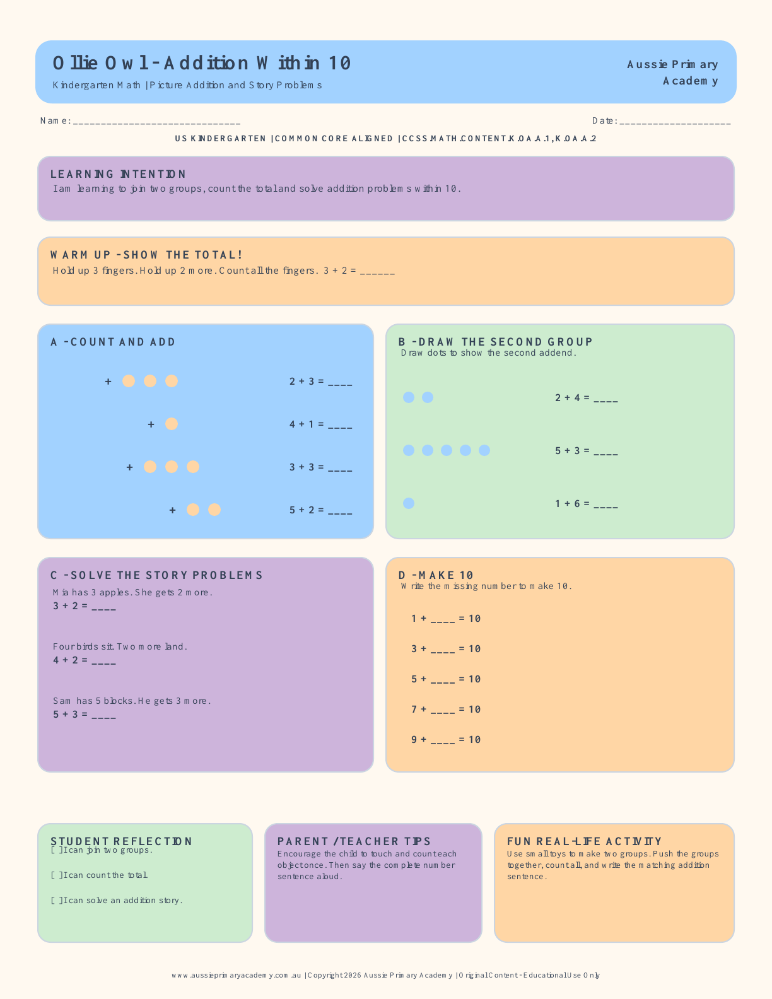

What’s Included
- Picture addition problems within 10
- Draw-the-second-group practice
- Simple joining story problems
- Missing addends that make 10
- Student reflection checklist
- Teacher answer key and checking notes
USA Kindergarten · Math · Free Printable
Help young learners understand addition by joining groups, counting pictures and solving simple stories. This free printable kindergarten addition within 10 worksheet includes focused practice and a teacher answer key.

Preview of the downloadable worksheet. The PDF also includes the teacher answer key.
Meaningful early math practice
This worksheet moves from concrete picture counting to simple addition stories. Children can touch or point to each object, join the two groups and record the total with a number sentence. The gradual structure supports learners who are beginning to connect real quantities with addition symbols.
Supports the Kindergarten expectation to solve addition and subtraction word problems and add or subtract within 10 using objects or drawings. This worksheet focuses specifically on addition through pictures, manipulatives and simple joining stories.
For the best result, open the PDF and select Fit or Fit to printable area. Print in color or grayscale on US Letter paper. The layout can also be printed on A4 paper using the same fit setting.
Flexible practice for teachers, parents, tutors and homeschool families.
Model the first problem with counters, then let students complete the picture tasks independently or with a partner. Use the story problems as a quick check for understanding.
Use small toys, buttons or snacks to act out each equation before writing the answer. Ask your child to explain what was joined and how they found the total.
Yes. You can download and print the PDF free for classroom, tutoring and homeschool learning.
Children join groups, count totals, solve picture and story problems within 10, and find missing addends that make 10.
Yes. The PDF includes a separate teacher answer key with answers and a short checking note.
Yes. Select Fit or Fit to printable area in your print settings. The worksheet also prints on A4 paper.
Build the next connected skills with free printable worksheets.